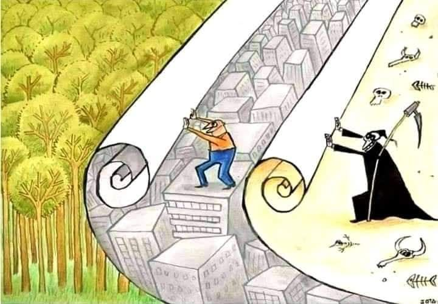

L’ombre du progrès
Homme tu avances,
sûr de tes mains,
Tu dresses des murs,
tu abat des pins.
Sous tes pas naissent
routes et tours,
Mais s’efface la forêt,
la source,
les jours.
Tu coupes l’arbre,
Tu poses du béton.
Tu crois bâtir l’avenir,
Tu déroules ta destruction.
Tu effaces le vert,
promesse de vie,
Derrière toi,
la mort déjà sourit.
Chaque arbre tombé,
chaque souffle brisé,
Tisse la toile
que tu crois dompter.
La forêt,
c’est la vie.
La ville morte,
c’est ta folie.
Et quand la faux viendra,
Tu comprendras
Tu as scié la branche
Où tu vivais déjà.
Tu roules le monde
comme un tapis,
Ne voyant pas
qu’il s’ouvre à l’infini.
Et derrière toi,
dans l’ombre glacée,
La faux s’impatiente,
prête à trancher.
Tu coupes l’arbre,
Tu coupes ton souffle.
La forêt tombe,
La mort récolte.
Homme aveugle,
maître insensé,
Ton empire de pierre
n’est qu’un sablier.
Quand tombera
le dernier bois,
La terre mourra…
et toi avec elle,
roi.
Sans arbre
Pas d’air.
Sans vie,
Que la mort à faire.
Chaque tronc tombé,
Un souffle arraché.
La faux sourit,
Tu l’as appelée.
Forêt abattue,
ville stérile.
Homme perdu,
terre fragile.
Tu plantes du béton,
Tu récoltes du néant.
Le sol s’éteint,
Et toi dedans.
Djamel Metref
At Yenni le 8 septembre 2025

← Tous les poèmes